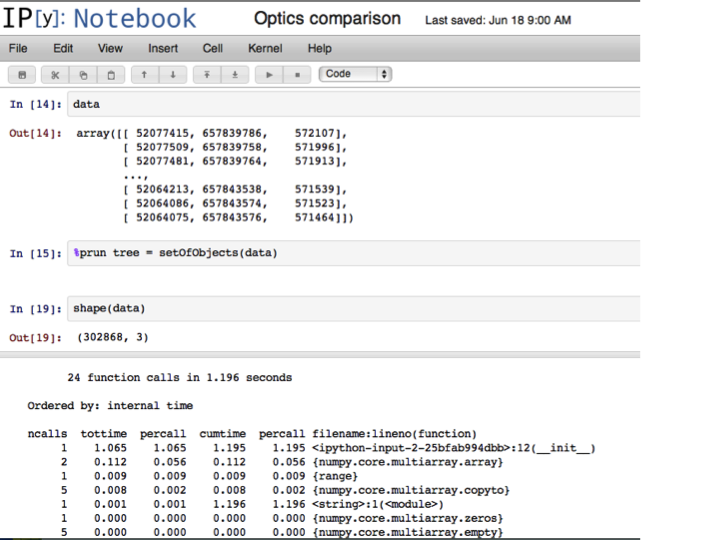
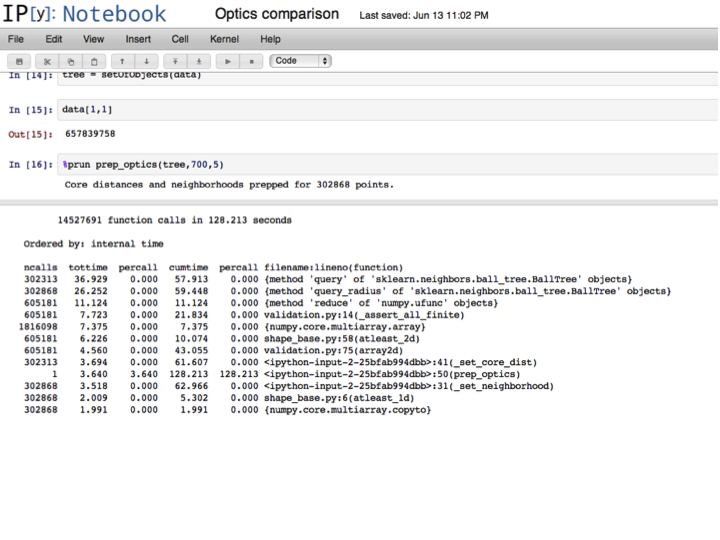
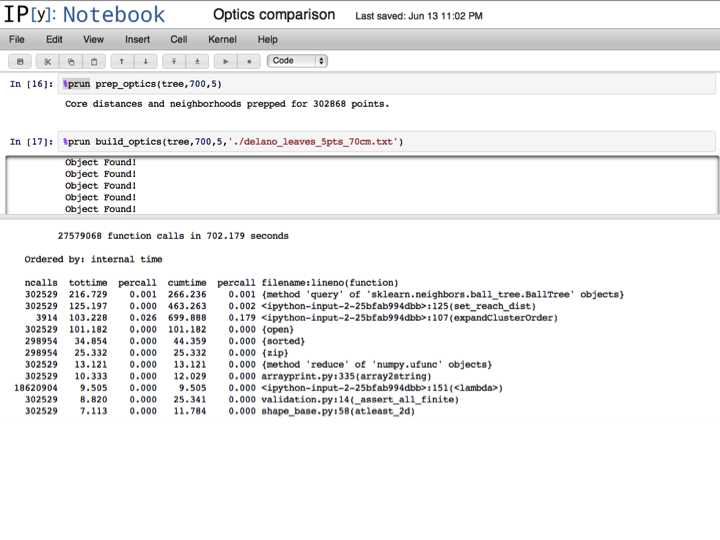
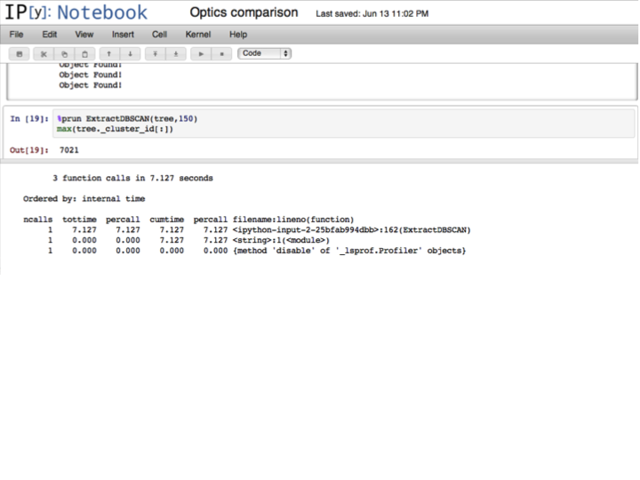
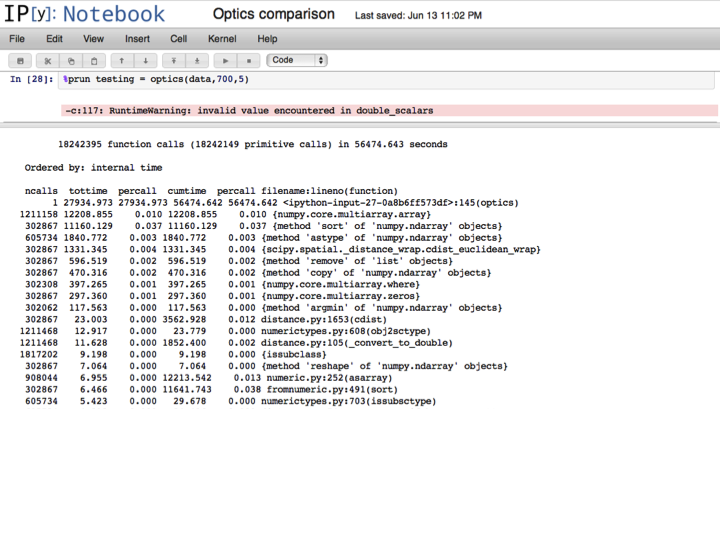
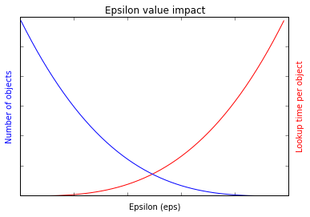
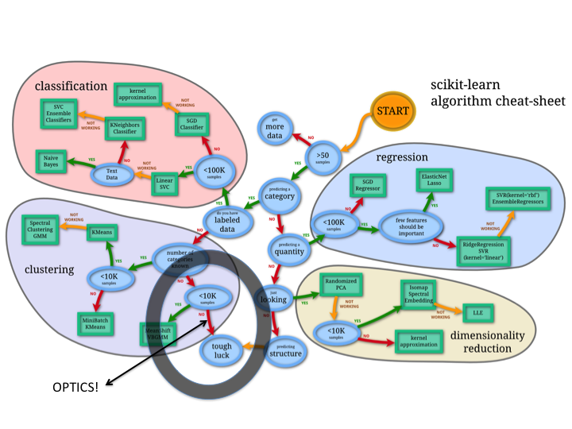

Comparing OPTICS Implementations (2013)¶
Background¶
The OPTICS algorithm is a density based segmentation algorithm that orders objects into a hierarchical ordering. It has a number of useful properties, such working with convex/concave clusters, requiring few input parameters, and not requiring a priori knowledge of the number of clusters that are to be segmented. The output from OPTICS is strictly speaking just an ordering of points, but this ordering can be ‘scanned’ to produce output that is essentially identical to DBSCAN.
The OPTICS algorithm uses pairwise distances to order objects (usually points) by a variety of distance and density metrics. The handling of these pairwise distances are the primary bottleneck for both CPU and memory utilization.
Test Setup¶
The run time of OPTICS is heavily dependent on the underlying spatial structure of the dataset. Random generations of data from uniform distributions don’t give meaningful results; fractal geometry gives meaningful clusters, but is not representative of the type of data that we are usually segmenting. For these tests, I’ve used a ‘small’ real world data set; the results that are discussed generalize in a predictable manner.
The data set consists of a radial scan of 302867 LiDAR points. The scan is of grape vines in the central valley, so the objects that we are interested in segmenting are leaves. Most leaves are between 15 and 30 centimeters, so an epsilon of 70 cm is used to give confidence that we can extract outliers larger than 30 centimeters. Note that the units in the code below are given in millimeters, hence an epsilon value of 700. Because the scan is radial, the optimal MinPts parameter is different close to scanner compared to further away; a value of 5 is used to match the furthest clusters (the radial scan was clipped to a radius of 5 meters to somewhat alleviate the variable density).
Balltree OPTICS¶
My implementation of OPTICS uses a balltree for neighborhood lookups, and runs in three steps. The first step constructs the modified balltree, which is implemented with a processing queue to track algorithm progress.
The second step is to preprocess the neighborhood size using prep_optics, which calculates at what radius a point becomes an object, and also the number of points that are adjacent a give point at the input epsilon parameter. This step simplifies the logic of later loops, and also speeds the algorithm. Since the lookups don’t need to be done in any particular order, they could be implemented in parallel, further optimizing this step.
The final step is the actual OPTICS loop, which is also the most intensive; it is run by calling build_optics
At this point, the OPTICS ordering is done, although a final step will extract the DBSCAN equivalent labels for a given epsilon.
Summing the above gives a runtime of 831.588 seconds for the OPTICS ordering, with an additional 7.127 seconds for the extraction (total 838.715 seconds with extraction).
cdist OPTICS¶
The cdist OPTICS implementation conforms more to the scikit-learn API, and can be run in a single step:
With a runtime of 56474.643 seconds, the cdist OPTICS runs more than 67 times slower then the balltree OPTICS implementation. Memory usage for cdist OPTICS is 150MB (balltree OPTICS stays at 250MB).
Implications¶
The cdist implementation of OPTICS is basically invariant in runtime with respect to epsilon parameter value. Memory usage is O(n), but runtime is O(n^2). The balltree implementation is same with regard to memory [O(n)], but runs in O(n*log(n)) time for reasonable values of epsilon; as epsilon approaches infinity, the expected run time approaches O(n^2). The general runtime expectation for the balltree version of OPTICS is shown below.
Basically, smaller query distance results in more objects, but they process faster due to having small list to sort, and having smaller numbers of points to calculate distances for. As dataset get larger, it may be appropriate to run small epsilon values and agglomerate to larger objects.
Increasing the number of points by expanding the scan radius would result in a linear or sublinear increase in processing time for balltree OPTICS; for cdist, the increase would be exponential (doubling density of points without expanding the range would cause balltree OPTICS to increase exponentially as well).
In summery, the order of magnitude difference in processing time is expected to widen with larger datasets, especially with datasets that are sparse.
Scikit-learn thoughts¶
There is currently a gap in scikits learn for handling large unlabeled data sets, as pointed out by Andy.
Processing data sets in the billions is only feasible in OPTICS by utilizing focal processing and spatial query trees. The balltree algorithm could be brought more in line with the scikit-learn API by constructing the balltree, running prep_optics, and building the ordering with the ‘fit’ method. The extraction to DBSCAN could be called using ‘predict’.
Since balltree implements 20 different distance metrics, extending OPTICS to take different distance metrics should simply be a matter of passing a construction flag.